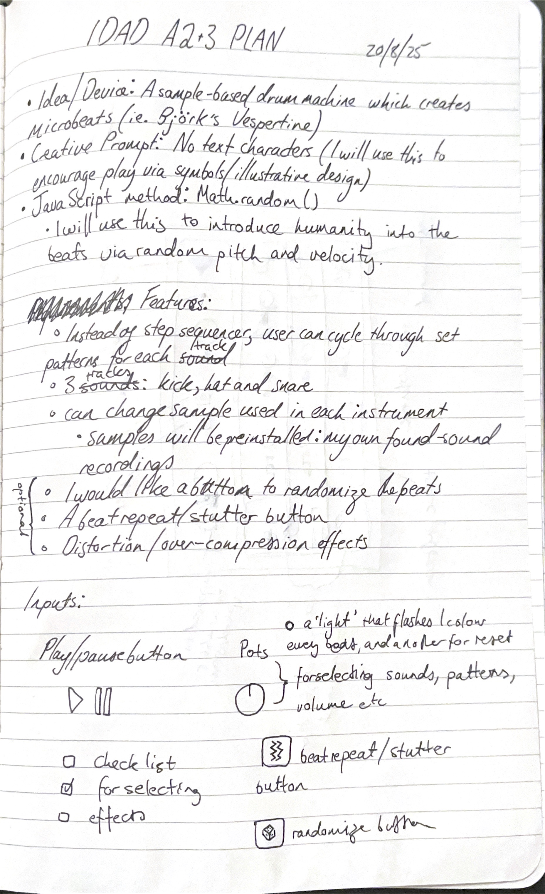

Plan
Over Assignment 2 and 3, we are designing and developing an interface for an interactive audio project, using the Tone.js framework. For this project, I would like to design a sample based drum machine which creates "microbeats" using found sounds.
We are given a set of creative prompts to work with for the project:
- No text characters
- All text characters
- Skeuomorphism
- Spacial control
- Novel input
I plan on choosing the prompt "No text characters". I plan to achieve this through symbols and evocative illustrations, encouraging play and expression from the user rather than precision.
We must also use one of the following JavaScript methods in our project:
- Random : Math.random()
- Date/time : Date.now()
- Location : navigator.geolocation.getCurrentPosition()
I plan on choosing "Math.random()", which I can use to generate expressivity and humanity in the beats (the ability to have random pitch and velocity can add humanity to the beats). The ability to randomise the beats could also be an interesting option to add play to the interface.
